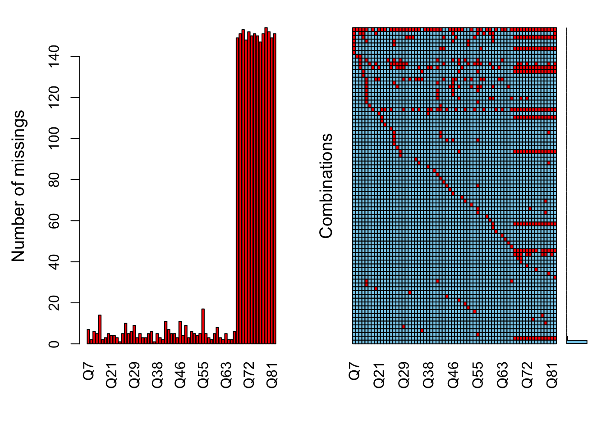
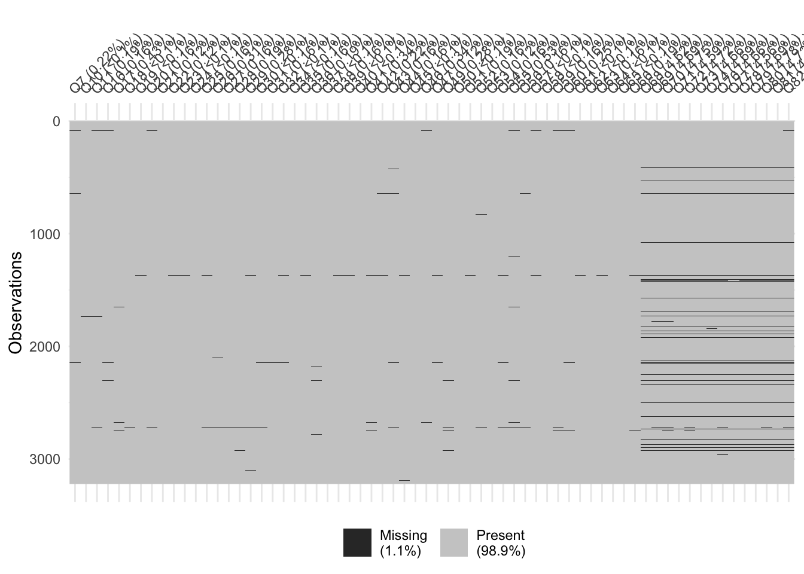
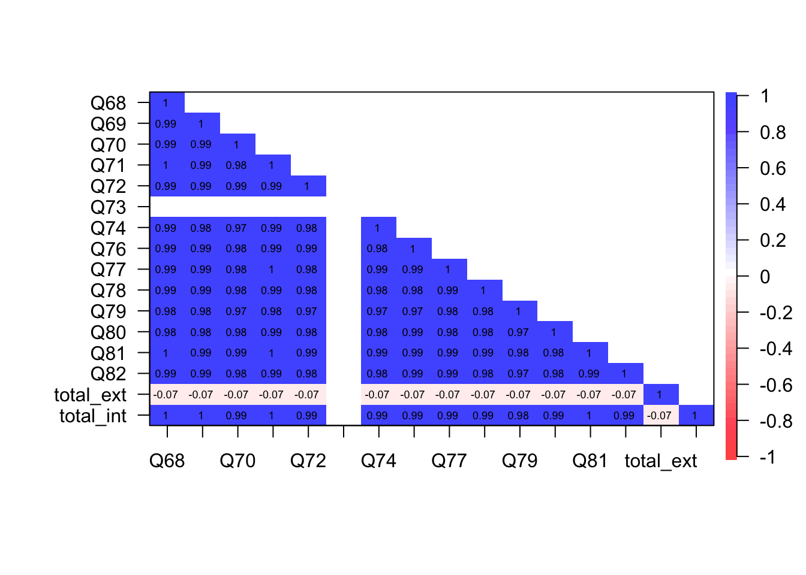

Data Preparation
This section describes how we prepare the data for analysis. This includes details on loading the necessary R packages, loading the data in R, and any necessary coding or recoding of variables. Also discussed is how we deal with missing data.
Load packages
Some R users load all their packages up front while others load them just before using functions, perhaps for instructional reasons. I can see merit in listing all the packages for properly citing them. Here is a code chunk for loading all the packages up front.
# LOAD PACKAGES
library(readxl) # for reading the source Excel file
library(haven) # for reading an SPSS file
# library(expss) # for variable and value labels
library(labelled) # for variable and value labels
library(Hmisc) # for variable and value labels## Loading required package: lattice## Loading required package: survival## Loading required package: Formula## Loading required package: ggplot2##
## Attaching package: 'Hmisc'## The following objects are masked from 'package:base':
##
## format.pval, unitslibrary(VIM) # for missing data## Loading required package: colorspace## Loading required package: grid## VIM is ready to use.## Suggestions and bug-reports can be submitted at: https://github.com/statistikat/VIM/issues##
## Attaching package: 'VIM'## The following object is masked from 'package:datasets':
##
## sleeplibrary(naniar) # for missing data
library(psych) # for psychometric analysis##
## Attaching package: 'psych'## The following object is masked from 'package:Hmisc':
##
## describe## The following objects are masked from 'package:ggplot2':
##
## %+%, alphalibrary(eRm) # for Rasch modeling##
## Attaching package: 'eRm'## The following object is masked from 'package:psych':
##
## sim.raschlibrary(corrplot) # for correlation plot## corrplot 0.92 loadedlibrary(knitr) # how RMarkdown compiles all the code into documentsLoad data
The data are contained in an Excel file, simply named “data.xlsx”, in a folder on Jack’s hard drive for the time being. The important thing is that the data are all kept in the same folder within the larger umbrella folder “SHAS Validity” for this R Project.
# LOAD DATA
# library(readxl) # for reading the source Excel file
shas <- read_excel("data/data.xlsx") # load the original Excel file from my computerSelect items for analysis
Here I extract from the original data file three smaller datasets for just the Likert items: * items - all the Likert items * ext_items - the 52 Likert items for measuring abusive external events * int_items - the 14 Likert items for measuring internal states
# SELECT DATASETS FOR ANALYSIS
all <- shas[ ,14:98] # select Likert items from columns 14-79 plus demographics
items <- shas[ ,14:79] # select Likert items from columns 14-79
ext_items <- shas[ ,14:35] # items for external events
int_items <- shas[ ,66:79] # items for internal states
# WRITE THESE DATASETS TO THE DATA FOLDER FOR FUTURE USE
write.csv(all,"data/all.csv")
write.csv(items,"data/items.csv")
write.csv(ext_items,"data/ext_items.csv")
write.csv(int_items,"data/int_items.csv")Missing data
Here we size up the problem of missing data. The first step is to get a feel for how much data are missing. The more data are missing, the more formidable a barrier this poses to the intended analysis of the data.
There are numerous R packages for dealing with missing data. The VIM package includes a host of tools for revealing, exploring, and dealing with missing data.
# VISUALIZE AND QUANTIFY MISSING DATA
# library(VIM)
a <- VIM::aggr(items, plot = FALSE)
plot(a, numbers = TRUE, prop = FALSE)## Warning in plot.aggr(a, numbers = TRUE, prop = FALSE): not enough vertical space
## to display frequencies (too many combinations)
# library(naniar)
naniar::vis_miss(items)## Warning: `gather_()` was deprecated in tidyr 1.2.0.
## Please use `gather()` instead.
## This warning is displayed once every 8 hours.
## Call `lifecycle::last_lifecycle_warnings()` to see where this warning was generated.
These plots reveal considerable missing data in the items toward the end of the dataset: those intended to measure internal states.The important question with missing data is whether the missingness is random or systematic.
The fact that most of the missing data are toward the end is a pattern. After thoughtfully responding to the 52 preceding items about abusive external events, at least some examinees were tired of answering questions. The sensitive nature of the internal states items may have been especially triggering to some examinees. One way to investigate this possibility is to examine the association between the external states items and whether examinees responded to the internal states items.
A Simple Triggering Study
The following code chunk conceives and executes a simple test of the triggering hypothesis. The items measuring external events are summed into a total score such that a higher value indicates more exposure to abusive external events. The items measuring internal states are coded so that 1=missing and and
# 1. MAKE A COPY OF ALL THE ITEMS JUST FOR THIS ANALYSIS
miss_set <- items
# writexl::write_xlsx(miss_set,"/Users/jack_huber/Documents/MY RESEARCH/SHAS Validity/miss_set.xlsx") # save as Excel to explore visually
# 2. RECODE INTERNAL STATES ITEMS AS DICHOTOMOUS (1=MISSING, 0=ENDORSED)
# Surely there is a better way to do this
miss_set$Q68[miss_set$Q68 > 0] <- 0
miss_set$Q68[is.na(miss_set$Q68)] <- 1
miss_set$Q69[miss_set$Q69 > 0] <- 0
miss_set$Q69[is.na(miss_set$Q69)] <- 1
miss_set$Q70[miss_set$Q70 > 0] <- 0
miss_set$Q70[is.na(miss_set$Q70)] <- 1
miss_set$Q71[miss_set$Q71 > 0] <- 0
miss_set$Q71[is.na(miss_set$Q71)] <- 1
miss_set$Q72[miss_set$Q72 > 0] <- 0
miss_set$Q72[is.na(miss_set$Q72)] <- 1
miss_set$Q73[miss_set$Q73 > 0] <- 1
miss_set$Q73[is.na(miss_set$Q73)] <- 1
miss_set$Q74[miss_set$Q74 > 0] <- 0
miss_set$Q74[is.na(miss_set$Q74)] <- 1
miss_set$Q76[miss_set$Q76 > 0] <- 0
miss_set$Q76[is.na(miss_set$Q76)] <- 1
miss_set$Q77[miss_set$Q77 > 0] <- 0
miss_set$Q77[is.na(miss_set$Q77)] <- 1
miss_set$Q78[miss_set$Q78 > 0] <- 0
miss_set$Q78[is.na(miss_set$Q78)] <- 1
miss_set$Q79[miss_set$Q79 > 0] <- 0
miss_set$Q79[is.na(miss_set$Q79)] <- 1
miss_set$Q80[miss_set$Q80 > 0] <- 0
miss_set$Q80[is.na(miss_set$Q80)] <- 1
miss_set$Q81[miss_set$Q81 > 0] <- 0
miss_set$Q81[is.na(miss_set$Q81)] <- 1
miss_set$Q82[miss_set$Q82 > 0] <- 0
miss_set$Q82[is.na(miss_set$Q82)] <- 1
# 3. OBTAIN TOTAL SCORE ON EXTERNAL EVENTS ITEMS
miss_set$total_ext <- rowSums(miss_set[ , c(1:52)], na.rm=FALSE) # a total score of exposure to abusive external events
miss_set$total_int <- rowSums(miss_set[ , c(53:66)]) # a total score of internal states missingness
# 4. RUN CORRELATION BETWEEN TOTAL SCORE AND DICHOTOMOUS ITEMS
miss_set <- miss_set[ , c(53:68)] # delete all but the internal states and total scores
miss_r <- lowerCor(miss_set) # the correlation matrix, rounded to 2 decimals## Warning in cor(x, use = use, method = method): the standard deviation is zero## Q68 Q69 Q70 Q71 Q72 Q73 Q74 Q76 Q77 Q78 Q79
## Q68 1.00
## Q69 0.99 1.00
## Q70 0.99 0.99 1.00
## Q71 1.00 0.99 0.98 1.00
## Q72 0.99 0.99 0.99 0.99 1.00
## Q73 NA NA NA NA NA NA
## Q74 0.99 0.98 0.97 0.99 0.98 NA 1.00
## Q76 0.99 0.99 0.98 0.99 0.99 NA 0.98 1.00
## Q77 0.99 0.99 0.98 1.00 0.98 NA 0.99 0.99 1.00
## Q78 0.99 0.99 0.98 0.99 0.98 NA 0.98 0.98 0.99 1.00
## Q79 0.98 0.98 0.97 0.98 0.97 NA 0.97 0.97 0.98 0.98 1.00
## Q80 0.98 0.98 0.98 0.99 0.98 NA 0.98 0.99 0.98 0.98 0.97
## Q81 1.00 0.99 0.99 1.00 0.99 NA 0.99 0.99 0.99 0.99 0.98
## Q82 0.99 0.99 0.98 0.99 0.98 NA 0.98 0.99 0.99 0.98 0.97
## total_ext -0.07 -0.07 -0.07 -0.07 -0.07 NA -0.07 -0.07 -0.07 -0.07 -0.07
## total_int 1.00 1.00 0.99 1.00 0.99 NA 0.99 0.99 0.99 0.99 0.98
## Q80 Q81 Q82 ttl_x ttl_n
## Q80 1.00
## Q81 0.98 1.00
## Q82 0.98 0.99 1.00
## total_ext -0.07 -0.07 -0.07 1.00
## total_int 0.99 1.00 0.99 -0.07 1.00corPlot(miss_r, stars= TRUE, upper = FALSE) # examine the many options for this function
This plot illustrates the correlations among the internal states items (dichotomized according to their missingness (1=missing, 0=all others)), the total score from the external states (total_ext), and the total score of internal item missingness (total_int). The correlation of total_ext with all the other items is nearly zero, suggesting that more exposure to abusive external states did not predict nonresponse to the internal states items.Missing data methods
There are different ways to handle missing data. A common method is to delete all cases missing any data. This is called listwise deletion of data. Its primary advantage is that it enables analysis based on complete information. However, listwise also disposes of information offered by examinees who responded to some items but not others. Listwise deletion also diminishes the size of the data set, and with it, statistical power. The code for selecting a dataset from listwise deletion is as follows:
# LISTWISE DELETION OF MISSING DATA
all_l <- na.omit(all) # Likert items from columns 14-79 plus demographics post listwise
items_l <- na.omit(items) # Likert items from columns 14-79 post listwise
ext_items_l <- na.omit(ext_items) # Likert items for external events post listwise
int_items_l <- na.omit(int_items) # Likert items for internal states post listwise
# Write these datasets to the project data folder
write.csv(all_l,"data/all_l.csv")
write.csv(items_l,"data/items_l.csv")
write.csv(ext_items_l,"data/ext_items_l.csv")
write.csv(int_items_l,"data/int_items_l.csv")
# items <- items[complete.cases(items), ] # create new dataset without missing data